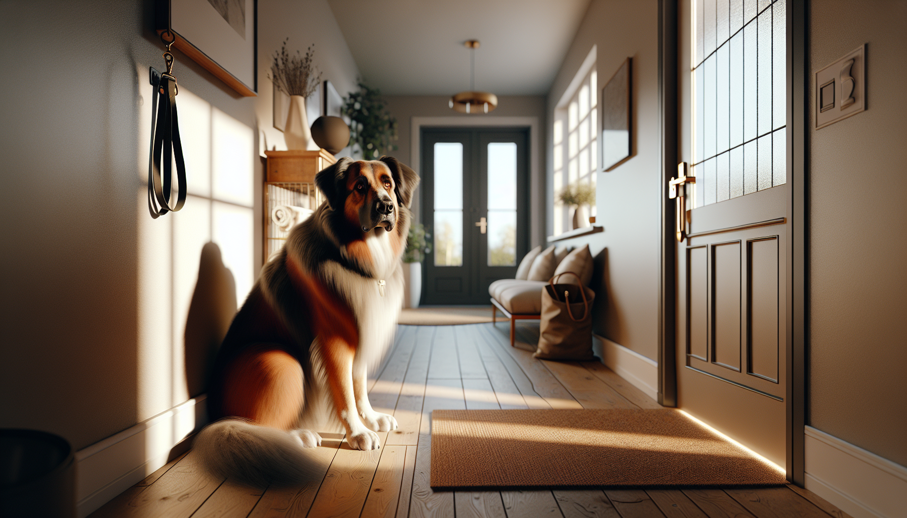

If your dog panics when you leave the house, you are not dealing with “bad behavior” or stubbornness. You may be seeing separation anxiety, a very real emotional response that can make alone time difficult for dogs and stressful for the people who love them. For new puppy parents, rescue adopters, and long-time dog owners alike, this issue can feel overwhelming. The good news is that separation anxiety is manageable, and many dogs improve significantly with the right plan.
In this guide, we will cover the most common signs of separation anxiety in dogs, what causes it, how it differs from boredom or lack of training, and the practical, science-backed solutions that help dogs build confidence when left alone. With patience, consistency, and realistic expectations, you can help your dog feel safer and more secure.
Separation anxiety is a distress response that happens when a dog is separated from a specific person or left alone. Some dogs become anxious the moment they notice pre-departure cues, such as you picking up your keys, putting on shoes, or grabbing a bag. Others stay calm until the door closes and then begin vocalizing, pacing, or trying to escape.
This is not the same as simple disappointment that a fun activity has ended. Dogs with true separation anxiety often experience intense panic. Their behavior is driven by fear and emotional dysregulation, not by spite, revenge, or dominance. Understanding that difference is essential because punishment can make the problem worse.
Separation anxiety can affect puppies, adult dogs, and seniors. It is especially common in newly adopted rescue dogs, dogs who have gone through major life changes, and dogs who have become highly dependent on one person.
The clearest sign of separation anxiety is that the behavior happens primarily when the dog is alone or separated from an attachment figure. Some dogs show one symptom, while others show several at once.
If possible, record your dog when you leave. A home camera can help you see exactly what happens, how quickly the distress starts, and whether the behavior reflects panic, frustration, or boredom. This information is extremely useful when building a training plan.
There is no single cause of separation anxiety. It usually develops from a combination of temperament, life experience, and environment. Some dogs are naturally more sensitive or prone to anxiety. Others develop the problem after a major disruption in routine or attachment.
Common contributing factors include:
Rescue adopters should know that many newly adopted dogs are still decompressing during the first days and weeks in a new home. A dog who seems clingy at first may be adjusting normally, but if the distress escalates when left alone, separation anxiety should be considered.
Not every dog who chews the couch has separation anxiety. Some dogs are under-exercised, under-enriched, or simply young and untrained. The key is context. A bored dog may chew or bark whether you are home or not. A dog with incomplete housetraining may have accidents at any time. A dog with separation anxiety shows behaviors specifically linked to your absence.
Here are a few clues that point more strongly toward separation anxiety:
If you are unsure, consult a qualified trainer or veterinary behavior professional. Correct diagnosis matters because the treatment plan for anxiety is different from the plan for boredom or general manners.
The most effective treatment for separation anxiety usually combines behavior modification, management, and in some cases veterinary support. There is rarely a quick fix, but there are proven strategies that help dogs learn that alone time is safe.
1. Start with management. Prevent full panic whenever possible while you work on training. That may mean arranging dog sitters, daycare, help from friends or family, or adjusting your schedule temporarily. Repeated panic episodes can reinforce the fear response.
2. Build independence in small ways. Encourage calm separation when you are still at home. Practice moving from room to room without your dog following every step. Use baby gates, settle mats, or short stationing exercises with rewards for relaxation.
3. Desensitize departure cues. Many dogs become anxious before you even leave. Practice picking up keys, putting on shoes, or opening and closing the door without actually going anywhere. Repeat until these cues lose their emotional charge.
4. Use gradual alone-time training. Start below your dog’s panic threshold. For some dogs, that may mean stepping outside for only a few seconds and returning before distress begins. Slowly increase duration over many repetitions. Progress should be gradual and based on your dog’s emotional state, not the calendar.
5. Pair absences with high-value reinforcement. Special food toys, stuffed enrichment items, or safe chews can help some dogs form a more positive association with your departure. However, if your dog is too anxious to eat when alone, this tool alone will not solve the problem.
6. Support overall emotional health. Daily exercise, sniff walks, training games, predictable routines, and adequate sleep all help lower baseline stress. A calmer nervous system learns more effectively.
7. Talk to your veterinarian when needed. In moderate to severe cases, medication can be an important part of treatment. This is not a shortcut or failure. For some dogs, reducing panic enough to learn is the kindest and most effective choice.
When people are exhausted and frustrated, it is understandable to look for fast answers. Unfortunately, some common strategies can slow progress or increase fear.
Also remember that separation anxiety is not cured by making reunions cold or withholding affection. Your bond is not the problem. The goal is to teach your dog that separation is temporary and safe.
If your dog is injuring themselves, breaking teeth, escaping enclosures, or showing extreme panic, seek professional support right away. The best options are a certified force-free trainer with separation anxiety experience, a behavior consultant, or a veterinarian and veterinary behaviorist. Professional guidance can save time and prevent setbacks.
You should also involve your veterinarian if your dog’s behavior changes suddenly, especially in an older dog. Pain, cognitive decline, sensory changes, or medical conditions can contribute to anxiety-like symptoms and should be ruled out.
Recovery from separation anxiety is usually measured in small wins. Maybe your dog can now stay relaxed for two minutes, then five, then fifteen. That progress matters. Consistency beats intensity, and calm repetition is more powerful than dramatic training sessions.
For puppies, prevention is key. Teach short, positive periods of independence early. For rescue dogs, go slowly and expect an adjustment period. For adult dogs who suddenly struggle, look for changes in routine, health, or environment. In every case, empathy and a structured plan go a long way.
Most importantly, remember that your dog is not trying to make life difficult. They are having a hard time. When you respond with patience and evidence-based training, you give them the best chance to feel safe, confident, and settled when home alone.
Separation anxiety in dogs can show up as barking, pacing, destruction, house soiling, or full-blown panic when left alone. It often develops after life changes, rehoming, or a lack of gradual independence training, and it can easily be confused with boredom or incomplete training. The most effective solutions include management, gradual desensitization, emotional support, and professional help when needed.
If your dog is struggling, take a breath and start small. Improvement is possible, and you do not have to figure it out alone.
Get our full Dog Training eBook series — new titles added weekly.